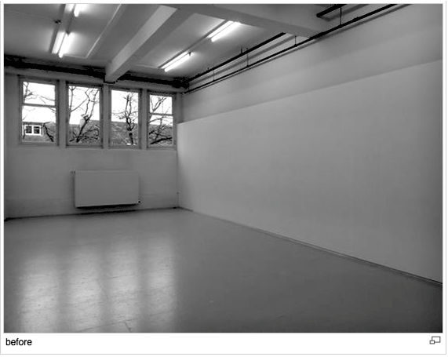

4.1. Compositional Choices / Improvisation Techniques: the formulation of chance and redudancy operating in a compositional field.
"Spontaneity as a technique of the performing artist, is nourished by fluctuations in a far from equilibrium field of intensive transformation. These fluctuations are the stutter of quasi-causal effects that condition and affect how what is felt feels. Quasi- causality is spontaneity’s informal abstract machine, enfolding and unfolding prehensions. As such, diagrammatic operations can be honed as techniques of improvisation that distinguish a biogrammatic artistic praxis." at She Stuttered: Mapping the Spontaneous Middle, from Sher Doruff.
WELCOME FOR A CONVERSATION! WHAT IS A CONVERSATION? with Kristof Van Gestel
I arrived at the empty room with only few objects gathered in one corner and was asked to display them all over the room, as I wanted to. First I was getting familiar with the different shapes, wondering where did they belong? And started by asking simple questions about the objects. The conversation evolved and then the artist would start asking me why I was choosing particular objects and also why to choose such disposition in space.
At some point the conversation went towards the method used by Kristof, his interest in phenomenology and the structures of experience, into a reflection on
DETERMINISM <> CHANCE
Chance arouses from something which is only determined only up to a certain extent. In this case, and from the artist's perspective, determinism was given by his choices when defining the rules of the experience as well as the objects to be integrated, whilst chance belonged to the visitor who would give continuation to the artwork.
The objects worked as points of contact between the Artist and the Audience, creating an environment for an embodied experience and for communication (the actual conversation). New stories, new meanings emerge out of those objects, within that space.
This experience made me think of how the interplay between determinism and chance may open up a space for an "ecology of creativity". In my view, more important than the actual Artist's objects was the chance given to a space for interaction, articulating the movement of the body and of thought through speech and speech through movement, acquiring a greater sense of presence and spatial awareness. This method brought the performing speaker/listener to a threshold of communication, making the whole conversation possible, and a new meaningful space.
p.s. also relevant for a "participatory" experience analyses: an interesting shift from audience / artist or artist / spectator gave space to a moment of shared roles and narratives.
In Massumi's words, "we emerge from experience".
